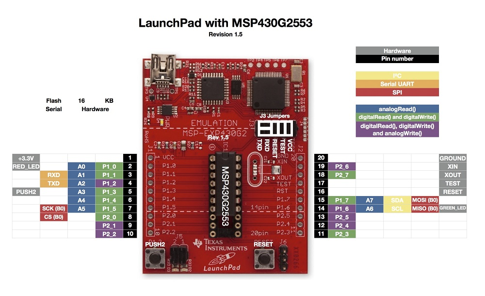

La MSP430 es una familia de microcontroladores fabricados por Texas Instruments. Construido con una CPU de 16 bits, el MSP430 está diseñado para aplicaciones embebidas de bajo costo, sistemas inalámbricos y/o de ultra bajo consumo de energía.
La plataforma LAUNCHPAD permite programar y depurar proyectos basados en microcontroladores MSP430 sin necesidad de herramientas adicionales.
Todos los pines del microcontrolador MSP430 son fácilmente accesibles, permitiendo conectar tarjetas de expansión (BoosterPack) para adicionar conectividad con sensores, comunicación inalámbrica, etc.
Para conocer más detalles sobre su funcionamiento veamos el siguiente enlace, en dicha página el fabricante nos expone las especificaciones de la plataforma.
http://www.ti.com/ww/en/launchpad/launchpads-msp430-msp-exp430g2.html#tabs
Descarga e instalación
Descargar e instalar los drivers del sistema para el dispositivo (Ejecutar la aplicación para el sistema operativo adecuado DPinst.exe para Windows 32bit o DPinst64.exe para Windows 64 bit)
https://github.com/energia/Energia/raw/gh-pages/files/EZ430-UART.zip
Descargar el entorno integrado de desarrollo Energia y descomprimir (No se requiere instalación, es una aplicación portable):
http://energia.nu/downloads/downloadv3.php?file=energia-0101E0016-windows.zip
Para Windows 8 y 10 siga esta guía para deshabilitar la verificación de firma de drivers:
https://learn.sparkfun.com/tutorials/disabling-driver-signature-on-windows-8
Verique la posición de los jumpers de acuerdo con la siguiente imagen:

Tenga en cuenta que algunos pines pueden ser programados para realizar diferentes funciones, ser configurados como entrada o como salida.
Por ejemplo, el PIN 5 está direccionado como P1_3, identificado como PUSH2 dentro del entorno de programación energía.
El PIN 2 está direccionado como P1_0, identificado como LED_RED.
El PIN 14 está direccionado como P1_6, identificado como LED_GREEN.